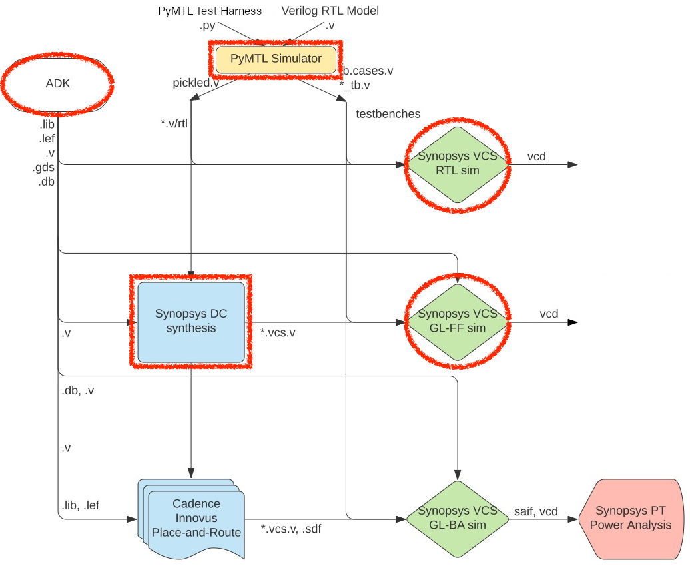
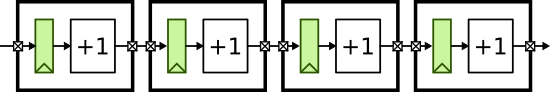
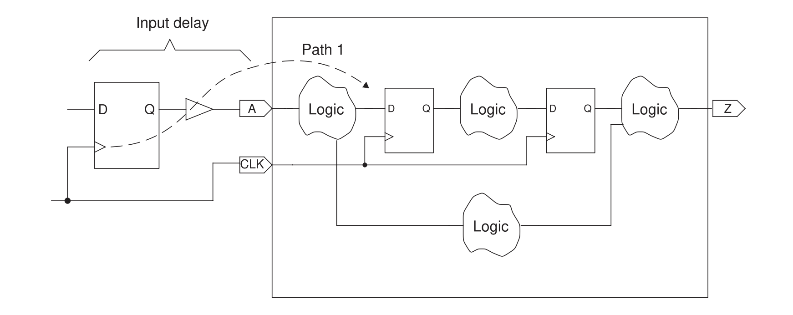
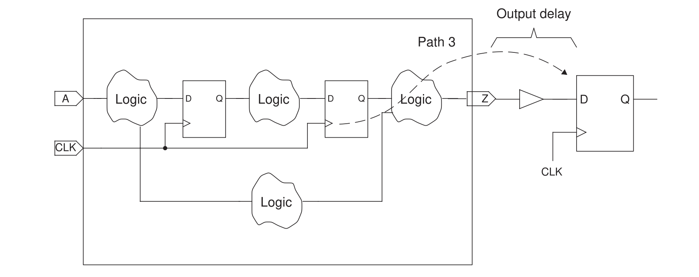
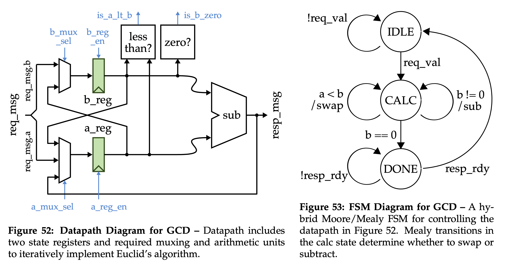
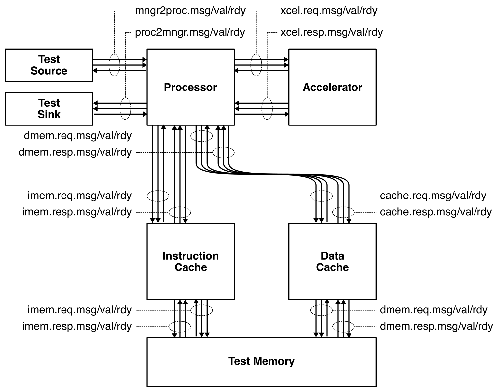

ECE 6745 Lab 6: Commercial Front-End Flow
In this lab, we will be exploring the commercial standard cell library and commercial front-end flow we will be using in project 2 and 3 of the course. More detailed tutorials will be posted on the public course website, but this lab will at least give you a chance to edit some RTL, synthesize that to a gate-level netlist, and then simulate that gate-level netlist. The following diagram illustrates the commercial flow we will be using in ECE 6745. Notice that the Synopsys and Cadence ASIC tools all require various views from the standard-cell library.

The "front-end" of the flow is highlighted in red and refers to the PyMTL simulator, Synopsys DC, and Synopsys VCS:
-
We use PyMTL to test and evaluate the execution time (in cycles) of our design using two-state RTL simulation via Verilator. This part of the flow is very similar to the flow used in ECE 4750. Once we are sure our design is working correctly, we can then start to push the design through the flow.
-
We use Synopsys VCS for RTL and gate-level simulation. Synopsys VCS uses four-state RTL simulation meaning every wire will be either a 0 (logic low), 1 (logic high), X (unknown), or Z (floating). Four-state RTL simulation can identify different kinds of bugs than two-state simulation such as bugs due to uninitialized state. Gate-level simulation uses the standard-cell library behavioral view to simulate every standard-cell gate and helps verify that the Verilog gate-level netlist is functionally correct.
-
We use Synopsys Design Compiler (DC) to synthesize our design, which means to transform the Verilog RTL model into a Verilog gate-level netlist where all of the gates are selected from the standard-cell library. We need to provide Synopsys DC with the standard-cell library front-end view in
.dbformat. In addition to the Verilog gate-level netlist, Synopsys DC can also generate a.ddcfile which contains information about the gate-level netlist and timing, and this.ddcfile can be inspected using Synopsys Design Vision (DV).
Extensive documentation is provided by Synopsys and Cadence. We have organized this documentation and made it available to you on the Canvas course page:
1. Logging Into ecelinux
Follow the same process as previous labs. Find a free workstation and log into the workstation using your NetID and standard NetID password. Then complete the following steps.
- Start VS Code
- Install the Remote-SSH extension, Surfer, Python, and Verilog extensions
- Use View > Command Palette to execute Remote-SSH: Connect Current Window to Host...
- Enter netid@ecelinux-XX.ece.cornell.edu where XX is an ecelinux server number
- Use View > Explorer to open your home directory on ecelinux
- Use View > Terminal to open a terminal on ecelinux
- Start MS Remote Desktop
Now use the following commands to clone the repo we will be using for today's lab.
% source setup-ece6745.sh
% source setup-gui.sh
% mkdir -p ${HOME}/ece6745
% cd ${HOME}/ece6745
% git clone git@github.com:cornell-ece6745/ece6745-lab6 lab6
% cd lab6
% tree
To make it easier to cut-and-paste commands from this handout onto the
command line, you can tell Bash to ignore the % character using the
following command:
2. Standard-Cell Library
As we know, there are six views for any standard cell library:
-
Behavioral View: Logical function of the standard cell, used for gate-level simulation
-
Schematic View: Transistor-level representation of standard cell, used for functional verification and layout-vs-schematic
-
Layout View: Layout of standard cell, used for design-rule checking (DRC), layout-vs-schematic (LVS), resistance/capacitance extraction (RCX), and fabrication
-
Extracted Schematic View: Transistor-level representation with extracted resistance and capacitances, used for layout-vs-schematic (LVS) and timing characterization
-
Front-End View: High-level information about standard cell including area, input capacitance, logical function, and delay model; used in synthesis
-
Back-End View: Low-level information about standard cell including height, width, and pin locations; used in placement and routing
Let's now take a look at each view for an INVX1, NAND2X1, and DFFX1 standard cell in the TSMC 180nm standard-cell library. The specific cell names for these three standard cells are shown below.
- INVX1 -> INVD1BWP7T
- NAND2X1 -> ND2D1BWP7T
- DFFX1 -> DFD1BWP7T
The behavioral view is in a Verilog file (stdcells.v). Use VS Code
to take a look and find the implementation of the INVX1, NAND2X1, and
DFFX1 standard cells.
Notice how the INVX1 and NAND2X1 standard cells are implemented using
Verilog primitives and include extra specify blocks which can be used
to model delay in back-annotated gate-level simulation. The DFFX1 is
actually quite complicated and is implemented using a custom primitive.
The DFFX1 also includes explicit timing checks which can be used to
ensure there are no setup or hold time violations during back-annotated
gate-level simulation.
The schematic view is in a SPICE file (stdcells.sp). Use VS Code to
take a look and find the implementation of the INVX1, NAND2X1, and DFFX1
standard cells.
Are the transistor channel lengths and widths as expected?
The layout view is in a GDS file (stdcells.gds). Use Klayout to
take a look and find the implementation of the INVX1, NAND2X1, and DFFX1
standard cells. Remember, you can right click on the cell name and
choose Show As New Top to display that cell.
Can you identify all of the transistors in the layout of the INVX1 and NAND2X1 standard cells?
The extracted schematic view is in a SPICE file (stdcells-rcx.sp).
Use VS Code to take a look and find the implementation of the INVX1,
NAND2X1, and DFFX1 standard cells.
Notice all of the extra parameters provided to each transistor model. How many parasitic resistors and capacitors are included in these standard cells?
The front-end view is in a Liberty file (stdcells.lib). Use VS Code
to take a look and find the implementation of the INVX1, NAND2X1, and
DFFX1 standard cells.
Spend a few minutes trying to find the following information in the front-end view for the INVX1 and NAND2X1 standard cells:
- area
- leakpage power
- input capacitance
- logic function
- non-linear delay models for propagation delay
- non-linear delay models for rise/fall time
For the DFFX1 standard cell see if you can find the non-linear delay information:
- non-linear delay models for setup time
- non-linear delay models for clock-to-q propagation delay
- non-linear delay models for hold time
Note that the stdcells.db view is just a binary version of the plain
text Liberty file. Both stdcells.lib and stdcells.db include the
exact same information; stdcells.db is just much more compact and
faster for tools to parse.
The back-end view is in a LEF file (stdcells.lef). Use VS Code to
take a look and find the implementation of the INVX1, NAND2X1, and DFFX1
standard cells.
Notice how the pins are just one or more rectangles and not just points. Notice how the DFFX1 includes a metal 1 obstruction which gives the routing algorithm the ability to route on metal 1 through this cell.
Finally, let's look at the databook PDF which includes information about all of the standard cells in the standard cell library. Find the databook entries for the INVX1, NAND2X1, and DFFX1 standard cells.
You must view the PDF on the server using MS Remote Desktop. Do not download the PDF to your workstation or laptop!
3. Ripple Carry Adder
In this part, we will be pushing a four-bit ripple carry adder through the commercial front-end flow.
3.1. 2-State RTL Sim
Take a look at the provided Verilog implementation of a four-bit ripple carry adder.
This looks very similar to what we used in project 1 except we need include guards to enable including this module multiple times. We also need to prefix the module name with the directory name to ensure there are no namespace conflicts across all Verilog modules in the design.
Take a look at the provided PyMTL wrapper for the ripple carry adder.
The wrapper simply specifies the input and output ports of the design. All of this should be familar from your work in ECE 4750 and completing Tutorial 3.
Let's take a look at the provided PyMTL test bench for the ripple carry adder.
We define a test harness which instantiates and elaborates the design
under test in the constructor and provides a check method to set inputs
and check outputs. The provided test case exhaustively tests all inputs.
This test bench is very similar to the Verilog test bench you used in
project 1.
Now let's run all of the tests for the ripple-carry adder.
% mkdir -p ${HOME}/ece6745/lab6/sim/build
% cd ${HOME}/ece6745/lab6/sim/build
% pytest ../addrc4b/test/AdderRippleCarry_4b_test.py
Let's dump a VCD file using --dump-vcd for waveform debugging with
Surfer.
% cd ${HOME}/ece6745/lab6/sim/build
% pytest ../addrc4b/test/AdderRippleCarry_4b_test.py --dump-vcd
% code AdderRippleCarry_4b_test__test_exhaustive_top.verilator1.vcd
Look at all the signals and try to see if it does indeed look like we are doing exhaustive testing.
We will work in the sim/build directory when developing and testing our
RTL. Once we are ready to push a design through the flow, we will move
over to the asic directory. Let's go ahead and rerun the PyMTL test but
with two key new command line options. --test-verilog will include all
Verilog dependencies into a single Verilog file (also called "pickling")
suitable for use with the ASIC flow. --dump-vtb will generate a Verilog
test benches which replay the PyMTL test; we can use these Verilog test
benches for two-state RTL simulation, fast-functional gate-level
simulation, and back-annotated gate-level simulation.
% cd ${HOME}/ece6745/lab6/asic/playground/addrc4b/01-pymtl-rtlsim
% pytest ${HOME}/ece6745/lab6/sim/addrc4b/test/AdderRippleCarry_4b_test.py --test-verilog --dump-vtb
Take a look at the generated pickled Verilog file and test bench.
% cd ${HOME}/ece6745/lab6/asic/playground/addrc4b/01-pymtl-rtlsim
% code AdderRippleCarry_4b__pickled.v
% code AdderRippleCarry_4b_test_exhaustive_tb.v
% code AdderRippleCarry_4b_test_exhaustive_tb.v.cases
There is a bug in PyMTL when pushing a purely combinational module through the commercial flow. So for now, run this command to fix the issue.
% cd ${HOME}/ece6745/lab6/asic/playground/addrc4b/01-pymtl-rtlsim
% sed -i.bak -e 's/ ,//' AdderRippleCarry_4b_test_exhaustive_tb.v
As we go along, let's create run scripts which will enable us to easily rerun each step. The run script for this first step is located here.
Go ahead and put the following into the run script for the PyMTL 2-State RTL Simulation step.
# Run PyMTL tests
pytest ${HOME}/ece6745/lab6/sim/addrc4b/test/AdderRippleCarry_4b_test.py --test-verilog --dump-vtb
# Fix up bug in PyMTL verilog test bench generation
sed -i.bak -e 's/ ,//' AdderRippleCarry_4b_test_exhaustive_tb.v
Now you can easily rerun the step like this.
3.2. 4-State RTL Sim
Recall that PyMTL3 simulation of Verilog RTL uses Verilator which is a
two-state simulator. To help catch bugs due to uninitialized state (and
also just to help verify the design using another Verilog simulator), we
can use Synopsys VCS for four-state RTL simulation. This simulator will
make use of the Verilog test-bench generated by the --dump-vtb option
from earlier (although we could also write our own Verilog test-bench
from scratch). Here is how to run VCS for RTL simulation:
% cd ${HOME}/ece6745/lab6/asic/playground/addrc4b/02-synopsys-vcs-rtlsim
% vcs -sverilog -xprop=tmerge -override_timescale=1ns/1ps -top Top \
+vcs+dumpvars+waves.vcd \
+incdir+../01-pymtl-rtlsim \
../01-pymtl-rtlsim/AdderRippleCarry_4b__pickled.v \
../01-pymtl-rtlsim/AdderRippleCarry_4b_test_exhaustive_tb.v | tee run.log
You should see a simv binary which is the compiled RTL simulator which
you can run like this:
It should pass the test. Now let's look at the resulting waveforms with Surfer.
The run script for the second step is located here.
Go ahead and put the following into the run script for the VCS 4-State RTL Simulation step.
vcs -sverilog -xprop=tmerge -override_timescale=1ns/1ps -top Top \
+vcs+dumpvars+waves.vcd \
+incdir+../01-pymtl-rtlsim \
../01-pymtl-rtlsim/AdderRippleCarry_4b__pickled.v \
../01-pymtl-rtlsim/AdderRippleCarry_4b_test_exhaustive_tb.v
./simv
Now you can easily rerun the step like this.
3.3. Synthesis
We use Synopsys Design Compiler (DC) to synthesize Verilog RTL models into a gate-level netlist where all of the gates are from the standard cell library. We start by creating launching the Synopsys DC REPL so we can test out all of the commands manually before writing a script to automate the process.
Initial Setup
We need to set two variables before starting to work in Synopsys DC.
These variables tell Synopsys DC the location of the standard cell
library .db file which is just a binary version of the .lib file we
saw earlier.
dc_shell> set_app_var target_library "$env(TSMC_180NM)/stdcells.db"
dc_shell> set_app_var link_library "* $env(TSMC_180NM)/stdcells.db"
We also need to increase the number of significant digits so it is easier to understand the timing reports.
Analyze and Elaborate the Design
We are now ready to read in the Verilog file which contains the top-level design and all referenced modules. We do this with two commands. The analyze command reads the Verilog RTL into an intermediate internal representation. The elaborate command recursively resolves all of the module references starting from the top-level module, and also infers various registers and/or advanced data-path components.
dc_shell> analyze -format sverilog ../01-pymtl-rtlsim/AdderRippleCarry_4b__pickled.v
dc_shell> elaborate AdderRippleCarry_4b
Create Timing Constraints
We now need to provide the timing constraints which will enable Synopsys DC to do timing-driven optimization and static-timing analysis. First, we tell Synopsys DC to ensure no signal has a rise or fall time greater than 250ps.
We need to tell Synopsys DC the load capacitance of all output pins in the design. We use a load capacitance of 5fF which is roughly the input capacitance of a small standard cell in TSMC 180nm.
Now we need to tell Synopsys DC what the cell is going to be driving the input pins. This will prevent Synopsys DC from optimizing the design such that it creates a very large input capacitance for the block driving this design. Here we use an INVX1 standard cell as the driving cell.
Finally, we need to constrain the delay from every input to every output. Synopsys DC does not attempt to optimize a design so it is as fast as possible. Instead, we specify a delay constraint and then Synopsys DC optimizes the design to meet that delay constraint while at the same time attempting to minimize the required area and power consumption. Here we specify that the delay from any input to any output should never be greater than 1ns.
Synthesize the Design
Finally, the compile command will do the logic optimization and
technology mapping.
Write Final Outputs and Reports
We write the output to a .ddc file which we can use with Synopsys DV
and a Verilog gate-level netlist.
dc_shell> write -format ddc -hierarchy -output post-synth.ddc
dc_shell> write -format verilog -hierarchy -output post-synth.v
We can also generate useful reports about area and static timing analysis. Prof. Batten will spend some time explaining these reports:
Make some notes about what you find. Note the total cell area used in this design. Finally, we go ahead and exit Synopsys DC.
Take a few minutes to examine the resulting Verilog gate-level netlist.
Take a close look at the implementation of the adder.
Synopsys Design Vision
We can use the Synopsys Design Vision (DV) tool for browsing the
resulting gate-level netlist, plotting critical path histograms, and
generally analyze our design. Start Synopsys DV and setup the
target_library and link_library variables as before.
% design_vision-xg
design_vision> set_app_var target_library "$env(TSMC_180NM)/stdcells.db"
design_vision> set_app_var link_library "* $env(TSMC_180NM)/stdcells.db"
You can use the following steps to open the .ddc file generated during
synthesis.
- Choose File > Read from the menu
- Open the
post-synth.ddcfile
You can use the following steps to view the gate-level schematic for the design:
- Select the
AdderRippleCarry_4bmodule in the Logical Hierarchy panel - Choose Select > Cells > Leaf Cells of Selected Cells from the menu
- Choose Schematic > New Schematic View from the menu
- Choose Select > Clear from the menu
You can use the Logical Hierarchy browser to highlight modules in the
schematic view. If you click on the drop down you can choose Cells
(All) instead of Cells (Hierarchical) to browse the standard cells as
well. You can determine the type of module or gate by selecting the
module or gate and choosing Edit > Properties from the menu. Then look
for ref_name.
You can use the following steps to view a histogram of path slack, and also to open a gate-level schematic of just the critical path.
- Choose Timing > Path Slack from the menu
- Click OK in the pop-up window
Create a Run Script
The run.tcl script for the third step is located here.
Go ahead and put all of the above Synopsys DC commands (i.e., the
dc_shell> commands) in the run.tcl file. Make sure to end your script
with exit. Then you can run all of these commands as follows.
You can further automate the process by using a run script to run Synopsys DC. The run script for the third step is located here.
Go ahead and put the following into the run script for this step.
Now you can easily rerun the step like this.
Optimized Synthesis
The compile command does not really do much optimization. Let's instead
use the compile_ultra command which will do much more aggressive logic
optimization. So replace compile with compile_ultra in your run.tcl
script and then rerun synthesis like this.
Look at the resulting post-synthesis gate-level netlist.
What standard cells did Synopsys DC use in the technology mapping? Go ahead and look up these standard cells in the standard cell databook PDF.
3.4. FFGL Sim
Good ASIC designers are always paranoid and never trust their tools. How do we know that the synthesized gate-level netlist is correct? One way we can check is to rerun our test suite on the gate-level model. We can do this using Synopsys VCS for fast-functional gate-level simulation. Fast-functional refers to the fact that this simulation will not take account any of the gate delays. All gates will take zero time and all signals will still change on the rising clock edge just like in RTL simulation. Here is how to run VCS for RTL simulation.
% cd ${HOME}/ece6745/lab6/asic/playground/addrc4b/04-synopsys-vcs-ffglsim
% vcs -sverilog -xprop=tmerge -override_timescale=1ns/1ps -top Top \
+delay_mode_zero \
+vcs+dumpvars+waves.vcd \
+incdir+../01-pymtl-rtlsim \
${TSMC_180NM}/stdcells.v \
../03-synopsys-dc-synth/post-synth.v \
../01-pymtl-rtlsim/AdderRippleCarry_4b_test_exhaustive_tb.v
The key difference from four-state RTL simulation is that this simulation
takes as input the Verilog for the standard-cell library and the Verilog
for the post-synthesis gate-level netlist. You should see a simv binary
which is the compiled RTL simulator which you can run as follows.
It should pass the test. Now let's look at the resulting waveforms using Surfer.
Browse the signal hierarchy and display all the waveforms for a subset of the gate-level netlist using these steps:
- Click on Top in the Scopes panel
- Click the + button in the Variables panel
The run script for the fourth step is located here.
Go ahead and put the following into the run script for the VCS fast-functional gate-level simulation step.
vcs -sverilog -xprop=tmerge -override_timescale=1ns/1ps -top Top \
+delay_mode_zero \
+vcs+dumpvars+waves.vcd \
+incdir+../01-pymtl-rtlsim \
${TSMC_180NM}/stdcells.v \
../03-synopsys-dc-synth/post-synth.v \
../01-pymtl-rtlsim/AdderRippleCarry_4b_test_exhaustive_tb.v
./simv
Now you can easily rerun the step like this.
4. Registered Incrementer
Our goal in this section is to generate a gate-level netlist for the following four-stage registered incrementer:

We will take an incremental design approach. We will start by implementing and testing a single registered incrementer, and then we will write a generic multi-stage registered incrementer.
4.1. 2-State RTL Sim
Let's run all of the tests for the registered incrementer:
The tests will fail because we need to finish the implementation. Let's start by focusing on the basic registered incrementer module.
Use VS Code to open the implementation and uncomment the actual combinational logic for the increment operation.
The Verilog RTL implementation should look as follows:
`ifndef TUT3_VERILOG_REGINCR_REG_INCR_V
`define TUT3_VERILOG_REGINCR_REG_INCR_V
`include "vc/trace.v"
module tut3_verilog_regincr_RegIncr
(
input logic clk,
input logic reset,
input logic [7:0] in_,
output logic [7:0] out
);
// Sequential logic
logic [7:0] reg_out;
always @( posedge clk ) begin
if ( reset )
reg_out <= 0;
else
reg_out <= in_;
end
// Combinational logic
logic [7:0] temp_wire;
always @(*) begin
temp_wire = reg_out + 1;
end
// Combinational logic
assign out = temp_wire;
// Line tracing
`ifndef SYNTHESIS
logic [`VC_TRACE_NBITS-1:0] str;
`VC_TRACE_BEGIN
begin
$sformat( str, "%x (%x) %x", in_, reg_out, out );
vc_trace.append_str( trace_str, str );
end
`VC_TRACE_END
`endif /* SYNTHESIS */
endmodule
`endif /* TUT3_VERILOG_REGINCR_REG_INCR_V */
If you have an error you can use a trace-back to get a more detailed error message:
Once you have finished the implementation let's rerun the tests:
The -v command line option tells pytest to be more verbose in its
output and the -s command line option tells pytest to print out the
line tracing.
Now let's work on composing a single registered incrementer into a multi-stage registered incrementer. We will be using static elaboration to make the multi-stage registered incrementer generic. In other words, our design will be parameterized by the number of stages so we can easily generate a pipeline with one stage, two stages, four stages, etc.
Use VS Code to open the implementation and look at the static elaboration logic to instantiate a pipeline of registered incrementers. The Verilog RTL implementation looks as follows:
`ifndef TUT3_VERILOG_REGINCR_REG_INCR_NSTAGE_V
`define TUT3_VERILOG_REGINCR_REG_INCR_NSTAGE_V
`include "tut3_verilog/regincr/RegIncr.v"
module tut3_verilog_regincr_RegIncrNstage
#(
parameter nstages = 2
)(
input logic clk,
input logic reset,
input logic [7:0] in_,
output logic [7:0] out
);
// This defines an _array_ of signals. There are p_nstages+1 signals
// and each signal is 8 bits wide. We will use this array of
// signals to hold the output of each registered incrementer stage.
logic [7:0] reg_incr_out [nstages+1];
// Connect the input port of the module to the first signal in the
// reg_incr_out signal array.
assign reg_incr_out[0] = in_;
// Instantiate the registered incrementers and make the connections
// between them using a generate block.
genvar i;
generate
for ( i = 0; i < nstages; i = i + 1 ) begin: gen
tut3_verilog_regincr_RegIncr reg_incr
(
.clk (clk),
.reset (reset),
.in_ (reg_incr_out[i]),
.out (reg_incr_out[i+1])
);
end
endgenerate
// Connect the last signal in the reg_incr_out signal array to the
// output port of the module.
assign out = reg_incr_out[nstages];
endmodule
`endif /* TUT3_VERILOG_REGINCR_REG_INCR_NSTAGE_V */
Before running the tests, let's take a look at how we are doing the
testing in the corresponding test script. Use VS Code to open up
RegIncrNstage_test.py. Notice how PyMTL enables sophisticated testing
for highly parameterized components. The test script includes directed
tests for two and three stage pipelines with various small, large, and
random values, and also includes random testing with 1, 2, 3, 4, 5, 6
stages. Writing a similar test harness in Verilog would likely require
10x more code and be significantly more tedious!
Let's run all of the tests for the multi-stage registered incrementer.
Test scripts are great for verification, but when we want to push a
design through the flow we usually want to use an interactive simulator
to drive that process. An interactive simulator is meant for evaluting
the area, energy, and performance of a design as opposed to verification.
We have included a simple interactive simulator called regincr-sim
which takes a list of values on the command line and sends these values
through the pipeline. Let's see the simulator in action:
% cd ${HOME}/ece6745/lab6/sim/build
% ../tut3_verilog/regincr/regincr-sim -s 0xff 0x20 0x30 0x40 0x00
The simulator will generate the pickled Verilog file we want to push through the ASIC front-end flow.
Now that we have everything working we can move over to the asic
directory. Go ahead and rerun the interactive simulator to generate the
pickled Verilog file and the Verilog test bench.
% cd ${HOME}/ece6745/lab6/asic/playground/regincr/01-pymtl-rtlsim
% ${HOME}/ece6745/lab6/sim/tut3_verilog/regincr/regincr-sim -s 0xff 0x20 0x30 0x40 0x00
Take a look at the generated pickled Verilog file and test bench.
% cd ${HOME}/ece6745/lab6/asic/playground/regincr/01-pymtl-rtlsim
% code RegIncr4stage__pickled.v
% code RegIncr4stage_basic_tb.v
% code RegIncr4stage_basic_tb.v.cases
Feel free to create a run script to make it easier to rerun this step.
4.2. 4-State RTL Sim
Now we can use Synopsys VCS to run 4-state RTL simulation just like in the previous section.
% cd ${HOME}/ece6745/lab6/asic/playground/regincr/02-synopsys-vcs-rtlsim
% vcs -sverilog -xprop=tmerge -override_timescale=1ns/1ps -top Top \
+vcs+dumpvars+waves.vcd \
+incdir+../01-pymtl-rtlsim \
../01-pymtl-rtlsim/RegIncr4stage__pickled.v \
../01-pymtl-rtlsim/RegIncr4stage_basic_tb.v
% ./simv
Feel free to create a run script to make it easier to rerun this step.
4.3. Synthesis
Start the Synopsys DC REPL so we can synthesize the registered incrementer.
Use what you learned in the previous section to setup, analyze, elaborate, constrain, synthesize, and write outputs for your design.
To constrain our design, we will need similar constraints as before.
dc_shell> set_max_transition 0.250 RegIncr4stage
dc_shell> set_driving_cell -lib_cell INVD1BWP7T [all_inputs]
dc_shell> set_load 0.005 [all_outputs]
However, we also need new constraints since the registered incrementer
includes synchronous logic. We will need to create a clock constraint
to tell Synopsys DC what our target cycle time is. Again, Synopsys DC
will not synthesize a design to run "as fast as possible". Instead, the
designer gives Synopsys DC a target cycle time and the tool will try to
meet this constraint while minimizing area and power. The create_clock
command takes the name of the clock signal in the Verilog (which in this
course will always be clk), the label to give this clock (i.e., clk),
and the target clock period in nanoseconds. So in this example, we are
asking Synopsys DC to see if it can synthesize the design to run at 1GHz
(i.e., a cycle time of 1ns).
In an ideal world, all inputs would change immediately with the clock edge. In reality, this is not the case since there will be some logic before this block on the chip as shown in the following figure.

We need to include reasonable propagation and contamination delays for the input ports so Synopsys DC can factor these into its timing analysis. Here, we choose the max input delay constraint to be 50ps (i.e., the block needs to meet the setup time constraints even if the inputs change 50ps after the rising edge of the clock), and we choose the min input delay constraint to be 0ps (i.e., the block needs to meet the hold time constraints even if the inputs change right on the rising edge clock).
dc_shell> set_input_delay -clock clk -max 0.050 [all_inputs -exclude_clock_ports]
dc_shell> set_input_delay -clock clk -min 0.000 [all_inputs -exclude_clock_ports]
We also need to constrain the output ports since there will be some logic after this block on the chip as shown in the following figure.

We need to include reasonable setup and hold time constraints for the output ports so Synopsys DC can factor these into its timing analysis. Here we choose a setup time constraint of 50ps meaning the output data must be stable 50ps before the rising edge of the clock, and we choose a hold time constraint of 0ps meaning the outputs can change right on the rising edge of the clock.
dc_shell> set_output_delay -clock clk -max 0.050 [all_outputs]
dc_shell> set_output_delay -clock clk -min 0.000 [all_outputs]
Finally we also need to constraint any combinational paths which go directly from the input ports to the output ports. Here we constrain such paths to be no longer than one cycle.
Once we have finished setting all of the constraints, we can use
check_timing to make sure there are no unconstrained paths or other
issues.
Use the following to optimize your design.
Feel free to create run scripts to make it easier to rerun this step.
4.4. FFGL Sim
Now we can use Synopsys VCS to run fast-functional gate-level simulation just like in the previous section.
% cd ${HOME}/ece6745/lab6/asic/playground/regincr/04-synopsys-vcs-ffglsim
% vcs -sverilog -xprop=tmerge -override_timescale=1ns/1ps -top Top \
+delay_mode_zero \
+vcs+dumpvars+waves.vcd \
+incdir+../01-pymtl-rtlsim \
${TSMC_180NM}/stdcells.v \
../03-synopsys-dc-synth/post-synth.v \
../01-pymtl-rtlsim/RegIncr4stage_basic_tb.v
% ./simv
Feel free to create a run script to make it easier to rerun this step.
5. GCD Accelerator
Our goal in this section is to generate a gate-level netlist for the GCD accelerator we explored in lab 5. Recall that our GCD accelerator is based on the stand-alone GCD unit from Tutorial 3.

We combined this stand-alone GCD unit with a manager to create a GCD accelerator which can be integrated with a TinyRV2 processor.

5.1. 2-State RTL Sim
Let's run all of the tests for the GCD accelerator:
We have also included a simulator which we can use for evaluating the accelerator.
Now that we have everything working we can move over to the asic
directory. Go ahead and rerun one test case and the interactive simulator
to generate the pickled Verilog file and two Verilog test benches.
% cd ${HOME}/ece6745/lab6/asic/playground/gcd-xcel/01-pymtl-rtlsim
% pytest ${HOME}/ece6745/lab6/sim/lab5_xcel/test/GcdXcel_test.py -k random_3x9 --test-verilog --dump-vtb
% ${HOME}/ece6745/lab6/sim/lab5_xcel/gcd-xcel-sim --impl rtl --translate --dump-vtb
Take a look at the generated pickled Verilog file and test bench.
% cd ${HOME}/ece6745/lab6/asic/playground/gcd-xcel/01-pymtl-rtlsim
% code GcdXcel_noparam__pickled.v
% code GcdXcel_noparam_test_random_3x9_tb.v.cases
% code GcdXcel_noparam_gcd-xcel-sim-rtl-random_tb.v.cases
Once generated test bench will serve as a test of correctness and the other generated test bench will be used for evaluation. Feel free to create a run script to make it easier to rerun this step.
5.2. 4-State RTL Sim
Now we can use Synopsys VCS to run 4-state RTL simulation just like in the previous section. We first run the test.
% cd ${HOME}/ece6745/lab6/asic/playground/gcd-xcel/02-synopsys-vcs-rtlsim
% vcs -sverilog -xprop=tmerge -override_timescale=1ns/1ps -top Top \
+vcs+dumpvars+waves.vcd -o simv-test \
+incdir+../01-pymtl-rtlsim \
../01-pymtl-rtlsim/GcdXcel_noparam__pickled.v \
../01-pymtl-rtlsim/GcdXcel_noparam_test_random_3x9_tb.v
% ./simv-test
Then we can run the evaluation.
% cd ${HOME}/ece6745/lab6/asic/playground/gcd-xcel/02-synopsys-vcs-rtlsim
% vcs -sverilog -xprop=tmerge -override_timescale=1ns/1ps -top Top \
+vcs+dumpvars+waves.vcd -o simv-eval \
+incdir+../01-pymtl-rtlsim \
../01-pymtl-rtlsim/GcdXcel_noparam__pickled.v \
../01-pymtl-rtlsim/GcdXcel_noparam_gcd-xcel-sim-rtl-random_tb.v
% ./simv-eval
Feel free to create a run script to make it easier to rerun this step.
5.3. Synthesis
Start the Synopsys DC REPL so we can synthesize the GCD accelerator.
Use what you learned in the previous section to setup, analyze, elaborate, constrain, synthesize, and write outputs for your design. The constraints should be the same as what was used with the registered incrementer.
Take a close look at the timing report. If you do not meet timing then you must resynthesize your design wiht a longer clock period to ensure you meet timing. Do not continue to the next step unless your design meets timing!
Feel free to create run scripts to make it easier to rerun this step.
5.4. FFGL Sim
Now we can use Synopsys VCS to run fast-functional gate-level simulation just like in the previous section. We first run the test.
% cd ${HOME}/ece6745/lab6/asic/playground/gcd-xcel/04-synopsys-vcs-ffglsim
% vcs -sverilog -xprop=tmerge -override_timescale=1ns/1ps -top Top \
+delay_mode_zero \
+vcs+dumpvars+waves.vcd -o simv-test \
+incdir+../01-pymtl-rtlsim \
${TSMC_180NM}/stdcells.v \
../03-synopsys-dc-synth/post-synth.v \
../01-pymtl-rtlsim/GcdXcel_noparam_test_random_3x9_tb.v
% ./simv-test
Then we can run the evaluation.
% cd ${HOME}/ece6745/lab6/asic/playground/gcd-xcel/04-synopsys-vcs-ffglsim
% vcs -sverilog -xprop=tmerge -override_timescale=1ns/1ps -top Top \
+delay_mode_zero \
+vcs+dumpvars+waves.vcd -o simv-eval \
+incdir+../01-pymtl-rtlsim \
${TSMC_180NM}/stdcells.v \
../03-synopsys-dc-synth/post-synth.v \
../01-pymtl-rtlsim/GcdXcel_noparam_gcd-xcel-sim-rtl-random_tb.v | tee -a run.log
% ./simv-eval
Feel free to create a run script to make it easier to rerun this step.